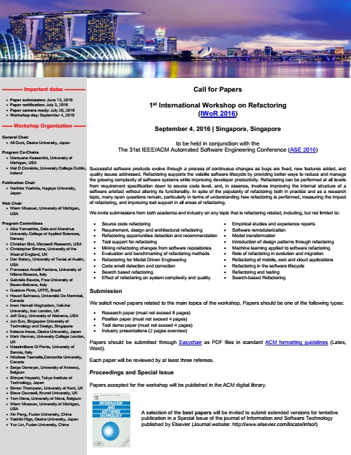
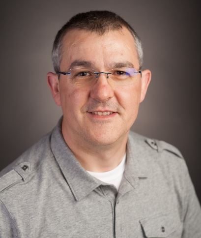
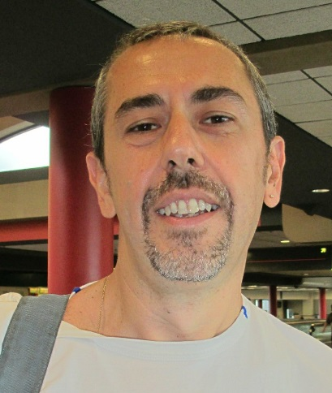
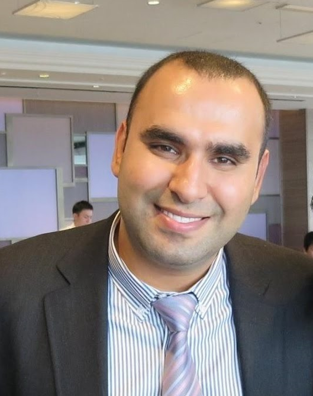

1st International Workshop on Refactoring
IWoR 2016
September 4, 2016, Singapore, Singapore
to be held in conjunction with the
31st IEEE/ACM Automated Software Engineering Conference (ASE 2016)
Welcome to IWoR 2016!
The goal of the 1st International Workshop on Refactoring (IWoR 2016) is to provide an informal interactive forum for researchers and practitioners to exchange ideas and experiences, streamline and foster research on software refactoring, identify some common ground of their work, share lessons and challenges, thereby articulating a vision for the future of software refactoring.
Accepted Papers
The list of accepted papers:
- Makoto Ichii, Daisuke Shimbara, Yasufumi Suzuki and Hideto Ogawa. Refactoring Verification using Model Transformation
- Aziz Nanthaamornphong and Apatta Chaisutanon. Empirical Evaluation of Code Smells in Open Source Projects: Preliminary Results
- Ganesh Samarthyam, Tushar Sharma and Girish Suryanarayana. Refactoring for Software Architecture Smells
- Marianne Huchard. Full Application of the Extract Interface Refactoring: Conceptual structures in the hands of master students
- Davide Arcelli, Vittorio Cortellessa and Daniele Di Pompeo. Automated translation among EPSILON languages for performance-driven UML software model refactoring
- Mel Ó Cinnéide, Aiko Yamashita and Steve Counsell. Measuring Refactoring Benefits: A Survey of the Evidence
- Syogo Tsutsumi, Eunjong Choi, Norihiro Yoshida and Katsuro Inoue.Graph-Based Approach for Detecting Impure Refactoring from Version Commits
Call For Papers
Successful software products evolve through a process of continuous change as bugs are fixed, new features added, and quality issues addressed. Refactoring supports the volatile software lifecycle by providing better ways to reduce and manage the growing complexity of software systems while improving developer productivity. Refactoring can be performed at all levels from requirement specification down to source code level, and, in essence, involves improving the internal structure of a software artefact without altering its functionality. In spite of the popularity of refactoring both in practice and as a research topic, many open questions remain, particularly in terms of understanding how refactoring is performed, measuring the impact of refactoring, and improving tool support in all areas of refactoring.
IWoR 2016 invites submissions from both academia and industry on any topic that is refactoring related, including, but not limited to:
- Source code refactoring
- Requirement, design and architectural refactoring
- Refactoring opportunities detection and recommendation
- Tool support for refactoring
- Mining refactoring changes from software repositories
- Refactoring in Model Driven Engineering
- Evaluation and benchmarking of refactoring methods
- Code smell detection and correction
- Effect of refactoring on system complexity and quality
- Empirical studies and experience reports
- Software remodularization
- Model transformation
- Introduction of design patterns through refactoring
- Machine learning applied to software refactoring
- Role of refactoring in evolution and migration
- Refactoring of mobile, web and cloud applications
- Refactoring in the software lifecycle
- Refactoring and testing
- Search-Based Refactoring

Submission Information
IWoR 2016 solicit novel contributions related to the main topics of the workshop. Papers should be one of the following types:
- Research paper (max of 8 pages)
- Position paper (max of 4 pages)
- Tool demo paper (max of 4 pages)
- Industry presentations (2 pages overview)
Each paper will be reviewed by at least three referees. Papers must be confirm to the standard ACM Formatting Guidlines, twocolumn conference format (Latex, Word). Paper submissions should be uploaded electronically in PDF format to the IWoR 2016 EasyChair submission site (https://easychair.org/conferences/?conf=iwsr2016).
Proceedings
Papers accepted for the workshop will be published in the workshop proceedings in the ACM digital library.
Special Issue
|
A selection of best papers will be invited to submit extended versions for tentative publication in a Special Issue of the journal of Information and Software Technology published by Elsevier. |
Important Dates
- Paper submission: June 16, 2016 (AoE Time)
- Paper notification: July 3, 2016 (AoE Time)
- Paper camera ready: July 31, 2016 (AoE Time)
- Workshop day: September 4, 2016
Keynote Speaker
|  |
Danny Dig |
Title: Refactoring for Asynchronous Execution on Mobile Devices
Abstract: This year it is expected that more than 300B mobile apps will be downloaded. The number one performance problem that plagues mobile apps arises when an app executes blocking I/O operations (e.g., accessing a cloud or a database) in the main UI thread. This freezes the app and frustrates users. To improve responsiveness, programmers often use asynchronous (async) programming. In the post-PC era, async programming is even more in demand because mobile and wearable devices have limited resources and access the network excessively. Despite the fact that mobile platforms provide several async constructs, programmers can still miss opportunities to encapsulate blocking operations in async constructs. Moreover, they can misuse async constructs, which result in memory leaks, lost results, wasted energy, data races, and deadlocks.
In this talk I will present refactoring techniques to convert blocking code into nonblocking async code and to fix misused async constructs and the lessons we learned along this journey.
Biography: Danny Dig is an associate professor at Oregon State University, and an adjunct professor at University of Illinois, doing research in Software Engineering. His research goal is to enable programmers to interactively and safely change large programs. He successfully pioneered interactive program transformations in cutting-edge domains including mobile, concurrency/parallelism, component-based, testing, and end-user programming. He earned his Ph.D. from Illinois where his research won the best Ph.D. dissertation award and the First Prize at the ACM Student Research Competition Grand Finals. His later research was recognized with 4 distinguished paper awards at the top conferences in Software Engineering, 4 award runner-ups, and 1 most influential paper award. He received the NSF CAREER award, Google Faculty Research award, and Microsoft Software Engineering Innovation award. Some of the techniques he developed are shipping with the official release of the popular Visual Studio, Eclipse, and NetBeans development environments that are used by millions of programmers everyday. His research has been funded by NSF, Boeing, IBM, Intel, Google, and Microsoft. More info about him can be found at:
http://dig.cs.illinois.edu
Invited Talk Speaker
|  |
Vittorio Cortellessa |
Title: Performance-driven software model refactoring
Abstract: The problem of identifying causes of performance problems is critical in the software design, mostly because the results of performance analysis (i.e. mean values, variances, and probability distributions) are difficult to be interpreted for providing feedback to software designers. Support is still weak to the interpretation of analysis results, whereas such support would greatly help designers to refactor software models for overcoming performance problems before software code is developed. The aim of this talk is to introduce this problem, present some mechanisms (based on the concept of performance antipattern) that we have introduced to tackle this problem, and discuss some possible future directions in this context.
Biography: I have received my M.S. degree in Computer Science from University of Salerno (Italy, 1991), and my Ph.D. degree in Computer Engineering from University of Roma "Tor Vergata" (Italy, 1995). In 1997 I was post-doc fellow at the European Space Agency (ESRIN, Frascati, Italy), working on analysis and evaluation of results in development of technologies for multi-mission ground segment simulation. Since January 1998 through December 1999 I held a post-doc position at DISP, University of Roma "Tor Vergata", working on performance model generation from software artifacts. Since January 2000 through October 2001 I have been Research Assistant Professor at CSEE, West Virginia University. Since November 2001 through February 2005 I have been Assistant Professor at University of L'Aquila, and since March 2005 I am Associate Professor at the same institution.
Program
| 9:15 -- 9:30 | Workshop Opening |
| 9:30 -- 10:30 | Keynote Speech |
| Speaker: Danny Dig | |
| 10:30 -- 11:00 | Morning Break |
Session 1: Architecture, Detection and Evaluation |
|
| 11:00 -- 11:30 | Empirical Evaluation of Code Smells in Open Source Projects: Preliminary Results |
| Aziz Nanthaamornphong and Apatta Chaisutanon<br> | |
| 11:30 -- 12:00 | Refactoring for Software Architecture Smells |
| Ganesh Samarthyam, Tushar Sharma and Girish Suryanarayana | |
| 12:00 -- 12:30 | Graph-Based Approach for Detecting Impure Refactoring from Version Commits |
| Syogo Tsutsumi, Eunjong Choi, Norihiro Yoshida and Katsuro Inoue | |
| 12:30 -- 13:00 | Measuring Refactoring Benefits: A Survey of the Evidence |
| Mel Ó Cinnéide, Aiko Yamashita and Steve Counsell | |
| 13:00 -- 14:30 | Lunch |
| 14:30 -- 15:00 | Invited Talk |
| Invited Talk Speaker: Vittorio Cortellessa | |
Session 2: Models and Application |
|
| 15:00 -- 15:30 | Refactoring Verification using Model Transformation |
| Makoto Ichii, Daisuke Shimbara, Yasufumi Suzuki and Hideto Ogawa | |
| 15:30 -- 16:00 | Automated translation among EPSILON languages for performance-driven UML software model |
| Davide Arcelli, Vittorio Cortellessa and Daniele Di Pompeo | |
| 16:00 -- 16:30 | Full Application of the Extract Interface Refactoring: Conceptual structures in the hands of master students |
| Marianne Huchard | |
| 16:30 -- 17:00 | Afternoon Break |
| 17:00 -- 17:45 | Panel Discussion |
| Panel members: to be announced | |
| 17:45 -- 18:00 | Workshop Closing |
Organization
| GENERAL CHAIR | |||||
|---|---|---|---|---|---|
|  Ali Ouni Osaka University, Japan | |||||
| PC Co-CHAIRS | |||||
 Marouane Kessentini University of Michigan, United States of America |
 Mel Ó Cinnéide University College Dublin, Ireland |
||||
| PUBLICITY CHAIR | |||||
|
Norihiro Yoshida, Nagoya University, Japan |
|||||
| WEB CHAIR | |||||
 Wiem Mkaouer University of Michigan, United States of America |
|||||
|
PROGRAM COMMITTEE |
|||||
|
|||||
Ali Ouni
Address: 1-5, Yamada-Oka, Suita, Osaka 565-0871, Japan
Tel: (+81) 080-7800-4400
E-mail: ali@ist.osaka-u.ac.jp